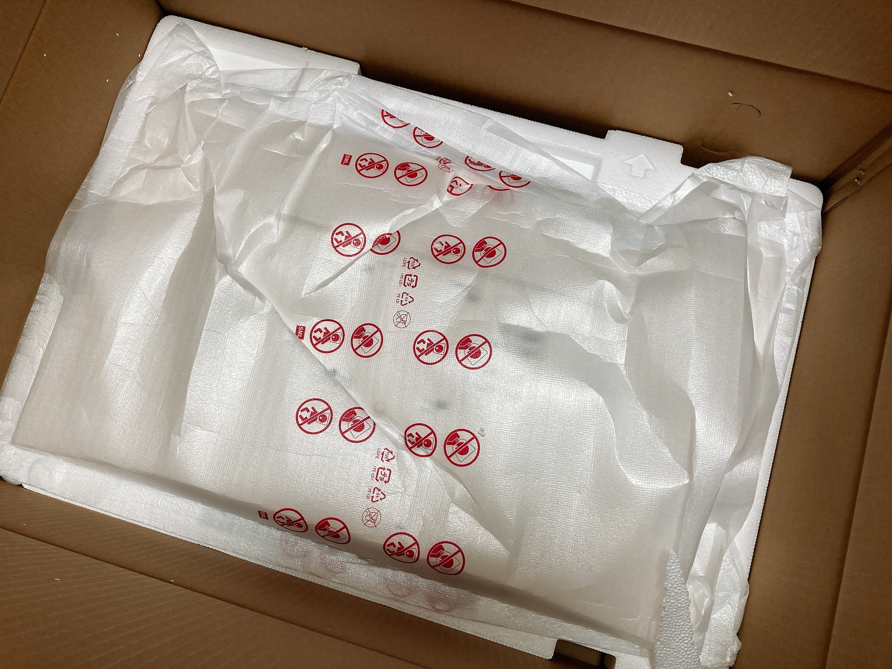

<!DOCTYPE html>
<html>
<head>
	<meta charset="utf-8" />
	<meta http-equiv="X-UA-Compatible" content="IE=edge"><title>机の狭さを札束で解決する - ただの日記にタイトルなんて要るか</title><meta name="viewport" content="width=device-width, initial-scale=1">
	<meta itemprop="name" content="机の狭さを札束で解決する">
<meta itemprop="description" content="いよいよ大本命がいらっしゃいました"><meta itemprop="datePublished" content="2021-08-29T21:34:36+09:00" />
<meta itemprop="dateModified" content="2021-08-29T21:34:36+09:00" />
<meta itemprop="wordCount" content="22">
<meta itemprop="keywords" content="買い物," /><meta property="og:title" content="机の狭さを札束で解決する" />
<meta property="og:description" content="いよいよ大本命がいらっしゃいました" />
<meta property="og:type" content="article" />
<meta property="og:url" content="https://suu-u.github.io/posts/210829/" /><meta property="article:section" content="posts" />
<meta property="article:published_time" content="2021-08-29T21:34:36+09:00" />
<meta property="article:modified_time" content="2021-08-29T21:34:36+09:00" />

<meta name="twitter:card" content="summary"/>
<meta name="twitter:title" content="机の狭さを札束で解決する"/>
<meta name="twitter:description" content="いよいよ大本命がいらっしゃいました"/>
<link href='https://fonts.googleapis.com/css?family=Playfair+Display:700' rel='stylesheet' type='text/css'>
	<link rel="stylesheet" type="text/css" media="screen" href="https://suu-u.github.io/css/normalize.css" />
	<link rel="stylesheet" type="text/css" media="screen" href="https://suu-u.github.io/css/main.css" />

        <link id="dark-scheme" rel="stylesheet" type="text/css" href="https://suu-u.github.io/css/dark.css" />

	<script src="https://cdn.jsdelivr.net/npm/feather-icons/dist/feather.min.js"></script>
		<script src="https://suu-u.github.io/js/main.js"></script>
</head>

<body>
	<div class="container wrapper">
		<div class="header">
	
		<div class="avatar">
			<a href="https://suu-u.github.io/">
				
			</a>
		</div>
	
	<h1 class="site-title"><a href="https://suu-u.github.io/">ただの日記にタイトルなんて要るか</a></h1>
	<div class="site-description"><p>🍳が不定期で日記を書くらしい</p><nav class="nav social">
			<ul class="flat"><li><a href="https://twitter.com/sal_pipr" title="Twitter"><i data-feather="twitter"></i></a></li><li><a href="/index.xml" title="RSS"><i data-feather="rss"></i></a></li><li><a href="#" class="scheme-toggle" id="scheme-toggle"></a></li></ul>
		</nav>
	</div>

	<nav class="nav">
		<ul class="flat">
			
			<li>
				<a href="/">Home</a>
			</li>
			
			<li>
				<a href="/posts">All posts</a>
			</li>
			
			<li>
				<a href="/about">About</a>
			</li>
			
			<li>
				<a href="/tags">Tags</a>
			</li>
			
		</ul>
	</nav>
</div>


		<div class="post">
			<div class="post-header">
				
					<div class="meta">
						<div class="date">
							<span class="day">29</span>
							<span class="rest">Aug 2021</span>
						</div>
					</div>
				
				<div class="matter">
					<h1 class="title">机の狭さを札束で解決する</h1>
				</div>
			</div>
					
			<div class="tags">
				
					
						
						<a href="/tags/%E8%B2%B7%E3%81%84%E7%89%A9">買い物</a>
						
					
				
			</div>

			<div class="markdown">
				<p>いよいよ買い物の大本命がいらっしゃいました。ディスプレイです。前から27インチ4Kディスプレイの購入を検討していて、実は数日前から先に届いたモニターアームの段ボールの隣で毎夜寝ていたりしたのですが、今日やっとディスプレイ本人が届いてくれました。</p>
<p>元が高いのもあり、ケチってAmazonアウトレットに手を出す。これで約10000円引き。最低ランクの「可」で、開封済っぽい（品質に問題はない）ものが届いたというレビューもありましたが。</p>
<p></p>
<p>確かに外箱はいかにもお勤め品という感じ。</p>
<p></p>
<p>でかでかアウトレットと書いたテープがぐるぐるしてあります。</p>
<p></p>
<p></p>
<p>中身は一切問題なさそう。レビューのものよりもさらに引きがよかったようです。当然ディスプレイ本体は新品同然。やったー。アウトレットって常に在庫のあるものではないので、とても運が良かった。</p>
<p>ここに、数日間ともに寝たモニターアームをがっしゃーん！します（語彙）。</p>
<p></p>
<p>エルゴトロンですよ奥さん。</p>
<p></p>
<p>あとは机のところまでこの子を持っていくだけ。今までいたフルHDディスプレイとアームにエルゴトロンの2画面モニターアームを追加して、フルHD・4K・空中浮遊林檎ブックの3枚体制を構築する計画です。</p>
<p>実はここから配置に相当難儀して、アームの根っこを計3回付け替えるという地獄が待っていました。大変だった。4K重すぎないとはいえ決して軽くはないし、重さ以上に移動に神経を使う代物なのが結構響いたなあと。どうしてそんなに付け替えを強いられたのかというと、うちの部屋狭いんですね。少なくとも<a href="../210826">クソデカ椅子で軽率に人権が死ぬ程度には</a>。本当はフルHDを縦置きしたかったんですけども、</p>
<p></p>
<p>きれいにディスプレイが並んでくれないという。というのも、林檎ブックが右手側に来てほしい都合上左側にディスプレイ2つを生やす用のアームを置きたいのに、机の左端のすぐそばに壁があるせいで引っかかるという。</p>
<p></p>
<p></p>
<p>図解するとこうです。壁の紫の部分が引っかかるのでフルHDちゃんの方のアームはまともな移動ができません。草。まあフルHDの縦横回転は問題なくできそうなのでよしとしましょう。</p>
<blockquote class="twitter-tweet"><p lang="ja" dir="ltr">うおおおおおお <a href="https://t.co/8qFfPv8Kx7">pic.twitter.com/8qFfPv8Kx7</a></p>&mdash; ₍₍⁽⁽🍳₎₎⁾⁾ (@sal_pipr) <a href="https://twitter.com/sal_pipr/status/1431937740908609539?ref_src=twsrc%5Etfw">August 29, 2021</a></blockquote>
<script async src="https://platform.twitter.com/widgets.js" charset="utf-8"></script>

<p>うおおおおおお。まじで3画面並びましたやったー。机の上のスペースが空いたので今まで膝置きだったキーボードがゆったり机の上に置けますやったー。これで日記が捗るはず。林檎ブックが右手すぐにあるおかげでトラックパッドにもすぐ手が伸びてよいですね。</p>
<p>既存の絵が隠れてしまっているので、その配置だけなんとかしないと。壁が足りない……。</p>
<p></p>
<p>ちなみに、エルゴトロンと非エルゴトロンのアームを2本使いしている状態です。古い子も問題なく使えるので満足しているんですけど、付け替えの時に古い子と違ってエルゴトロンは使用者にネジを握らせない仕様になってて金を感じました（写真左）。クソデカ椅子にしろエルゴトロンにしろ、やっぱり金をかけるとそれ相応の差が細部に現れてきて面白いですね。</p>

			</div>
		</div>
	</div>
	<div class="footer wrapper">
	<nav class="nav">
		<div>2021  © sal_pipr |  <a href="https://github.com/knadh/hugo-ink">Ink</a> theme on <a href="https://gohugo.io">Hugo</a></div>
	</nav>
</div>


<script type="application/javascript">
var doNotTrack = false;
if (!doNotTrack) {
	window.ga=window.ga||function(){(ga.q=ga.q||[]).push(arguments)};ga.l=+new Date;
	ga('create', 'UA-123-45', 'auto');
	
	ga('send', 'pageview');
}
</script>
<script async src='https://www.google-analytics.com/analytics.js'></script>
<script>feather.replace()</script>
</body>
</html>
